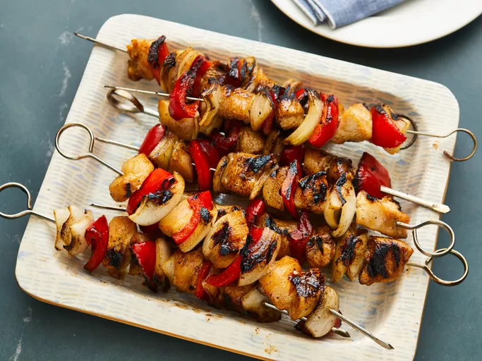

Chicken Kabobs

These chicken kabobs are marinated in a sweet and savory soy sauce and honey mixture that doubles as
a basting sauce as the kabobs cook on the grill, adding delicious flavor to every bite of juicy chicken.
Ingredients
- Chicken breast
- Onion
- Bell peppers
- Garlic
- Skewers
- Black pepper
- Honey
- Soy Sauce
- Oil
Instructions
-
Make the marinade: Whisk together the honey, soy sauce, oil, and black pepper in a large bowl. Transfer ¼-cup of the
marinade to a small jar and seal.
-
Marinate the ingredients: Add the chicken, onions, peppers, and garlic to the marinade in the bowl. Cover and refrigerate for at
least two hours, but preferably overnight.
-
Assemble the kabobs: Drain the chicken and vegetables, then discard the marinade.
Thread the ingredients onto the skewers.
-
Grill the kabobs: Grill the skewers on a lightly oiled, preheated grate. Cook, turning frequently and brushing with reserved marinade, until the chicken is fully
cooked and no longer pink in the center.
Back to top
Back to homepage